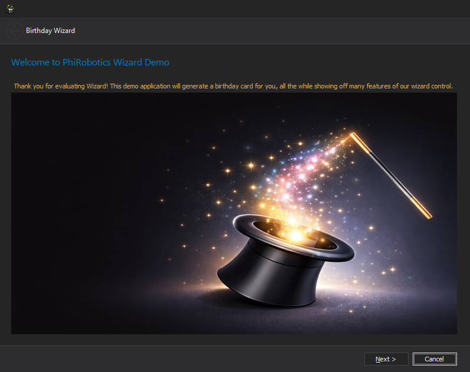
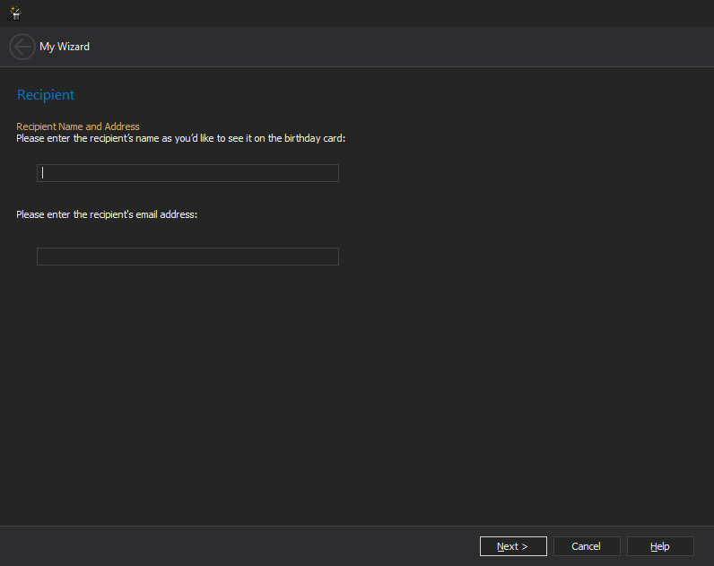
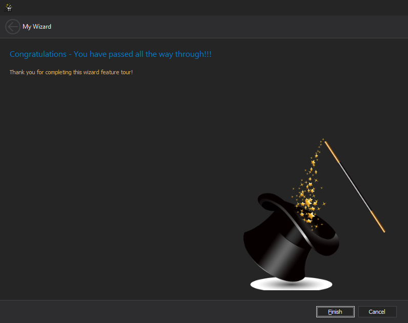

Creating a Wizard
This guide explains how to create and deploy a wizard for the PhiRobotics Wizard Framework.
A wizard allows developers to extend the application by adding guided workflows implemented in external assemblies. The wizard framework automatically discovers and registers these wizards at runtime.
Overview
A wizard typically consists of:
- Welcome Page -- Introduces the wizard and describes its purpose.
- Interior Pages -- One or more pages that guide the user through a process.
- Completion Page -- Confirms that the wizard finished successfully.
To create a wizard you must:
- Implement
IWizard - Assign a unique ID using
WizardIdAttribute - Export the wizard using
ExportedWizardAttribute - Deploy the compiled assembly to the wizard directory
Step 1: Implement the Wizard
Create a class that implements the IWizard interface.
Example:
using PhiRobotics.UI.Wizard;
using System;
using System.Collections.Generic;
namespace PhiRobotics.Usage
{
[WizardId("AF750DAF-ABFD-427C-9F0B-9ECCC210C95C")]
public class BirtdayWizard : IWizard
{
private readonly WelcomePage welcomePage;
private readonly CompletionPage completionPage;
private readonly Dictionary<string, IWizardPage> pages;
private BirthdayWish birthdayWish;
public BirtdayWizard()
{
welcomePage = new WelcomePage("Welcome to PhiRobotics Wizard Demo",
"Thank you for evaluating Wizard! This demo application will generate a birthday" +
" card for you, all the while showing off many features of our wizard control.");
completionPage = new CompletionPage("Congratulations - You have passed all the way through!!!",
"Thank you for completing this wizard feature tour!");
birthdayWish = new BirthdayWish();
pages = new Dictionary<string, IWizardPage>();
pages.Add("RecipientDataPage", new RecipientDataPage(birthdayWish));
pages.Add("CardTemplatePage", new CardTemplatePage(birthdayWish));
pages.Add("SignaturePage", new SignaturePage(birthdayWish));
pages.Add("PreviewPage", new PreviewPage(birthdayWish));
}
public WelcomePage WelcomePage
{
get { return welcomePage; }
}
public CompletionPage CompletionPage
{
get { return completionPage; }
}
public IReadOnlyDictionary<string, IWizardPage> Pages
{
get { return pages; }
}
public void Activated(IWizardPage page)
{
}
public void Cancel()
{
birthdayWish.RecipientName = string.Empty;
birthdayWish.RecipientEmail = string.Empty;
birthdayWish.Wishes = string.Empty;
birthdayWish.IncludeSignature = false;
birthdayWish.Signature = string.Empty;
birthdayWish.From = string.Empty;
}
public object Complete()
{
return birthdayWish;
}
public void Initialize(object data)
{
birthdayWish.RecipientName = string.Empty;
birthdayWish.RecipientEmail = string.Empty;
birthdayWish.Wishes = string.Empty;
birthdayWish.IncludeSignature = true;
birthdayWish.Signature = string.Empty;
birthdayWish.From = string.Empty;
}
}
}
Step 2: Create Wizard Pages
Wizard pages represent individual steps in the wizard.
Example:
using PhiRobotics.UI.Wizard;
using System;
using System.Windows.Forms;
namespace PhiRobotics.Usage
{
class RecipientDataPage : IWizardPage
{
private bool allowBack = true;
private bool allowNext = true;
private RecipientDataPageControl control = null;
private BirthdayWish birthdayWish;
public RecipientDataPage(BirthdayWish birthdayWish)
{
this.birthdayWish = birthdayWish;
control = new RecipientDataPageControl(this);
control.CurrentErrorKind = ErrorKind.None;
control.CurrentError = string.Empty;
}
#region IWizardPage
public event EventHandler AllowBackChanged;
public event EventHandler AllowNextChanged;
public bool AllowBack
{
get { return allowBack; }
set
{
if (allowBack != value)
{
allowBack = value;
AllowBackChanged?.Invoke(this, EventArgs.Empty);
}
}
}
public bool AllowNext
{
get { return allowNext; }
set
{
if (allowNext != value)
{
allowNext = value;
AllowNextChanged?.Invoke(this, EventArgs.Empty);
}
}
}
public string HeaderText
{
get { return "Recipient"; }
}
public ErrorKind CurrentErrorKind
{
get { return control.CurrentErrorKind; }
}
public string CurrentError
{
get { return control.CurrentError; }
}
public string DescriptionText
{
get { return "Recipient Name and Address"; }
}
public Control Control
{
get { return control; }
}
public bool HasHelp
{
get { return true; }
}
public void Activating()
{
control.RecipientName = birthdayWish.RecipientName;
control.EmailAddress = birthdayWish.RecipientEmail;
}
public bool Commit()
{
if (string.IsNullOrWhiteSpace(control.RecipientName))
{
return false;
}
else if (string.IsNullOrWhiteSpace(control.EmailAddress))
{
return false;
}
birthdayWish.RecipientName = control.RecipientName;
birthdayWish.RecipientEmail = control.EmailAddress;
return true;
}
public string GetNextPage()
{
return "CardTemplatePage";
}
public string GetPreviousPage()
{
return null;
}
public void ShowHelp()
{
MessageBox.Show("This is recipient page of wizard.", "Wizard Page",
MessageBoxButtons.OK, MessageBoxIcon.Exclamation);
}
#endregion
}
}
Multiple pages can be added to the wizard.
Step 3: Export the Wizard
To allow the wizard host to discover your wizard, export it at the assembly level.
Example:
[assembly: ExportedWizard(typeof(PhiRobotics.Usage.BirtdayWizard))]
An assembly can export multiple wizards:
[assembly: ExportedWizard(typeof(PhiRobotics.Usage.BirtdayWizard))]
[assembly: ExportedWizard(typeof(PhiRobotics.Usage.ProjectWizard))]
Step 4: Deploy the Wizard
Compile the project into a DLL and place the DLL in the wizard directory used by the application.
Example directory structure:
Application
├─ Wizards
│ ├─ BirtdayWizard.dll
│ └─ ProjectWizard.dll
When the application starts, the wizard host scans this directory and registers all exported wizards.
Running a Wizard
Once the wizard is registered, it can be executed using IWizardHost.
Refer to the IWizardHost for more information.
Example:
WizardResult result = wizardHost.Show(
wizardId,
"Birtday Card Wizard",
null,
initArgs
);
if (result.DialogResult == DialogResult.OK)
{
var data = result.Data;
}
Output of Wizard
Welcome Page

Interior Page

Completion Page

The wizard host performs the following steps:
- Locates the wizard type using the wizard ID
- Creates the wizard instance
- Initializes the wizard
- Displays the wizard dialog
- Returns the result when the wizard finishes
Summary
Creating a wizard involves:
- Implementing
IWizard - Assigning a unique
WizardIdAttribute - Exporting the wizard using
ExportedWizardAttribute - Deploying the assembly to the wizard directory
Once deployed, the wizard framework automatically discovers and registers the wizard.